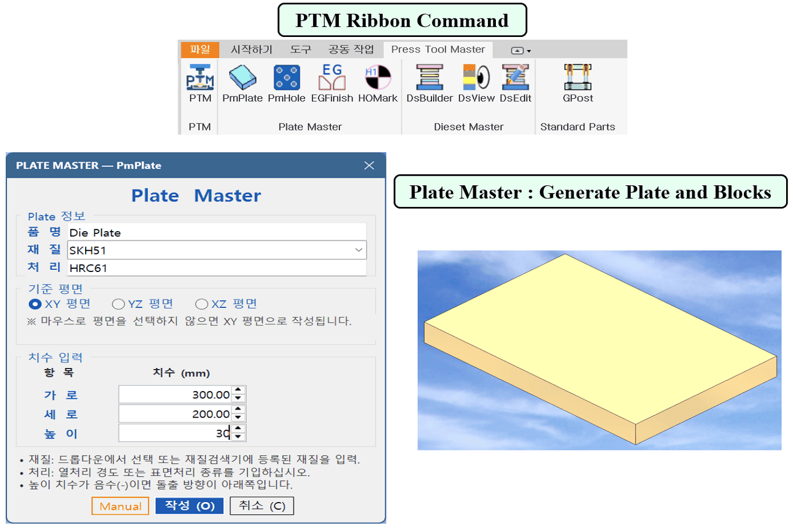
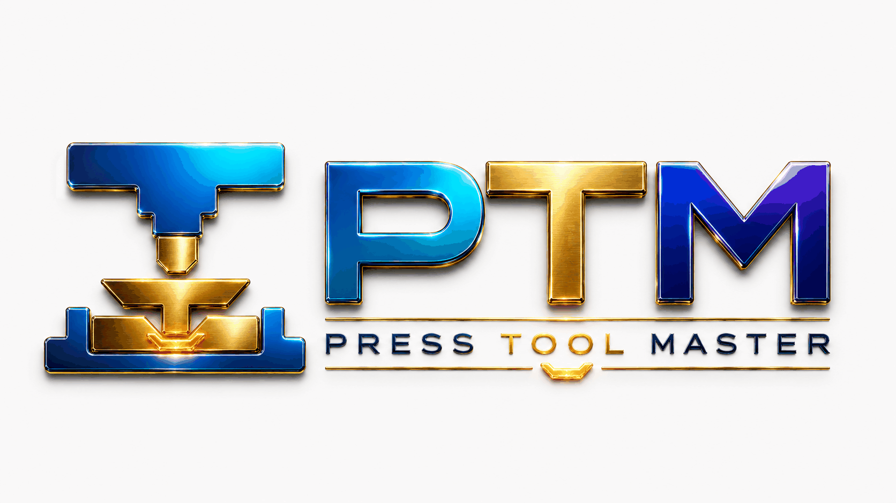
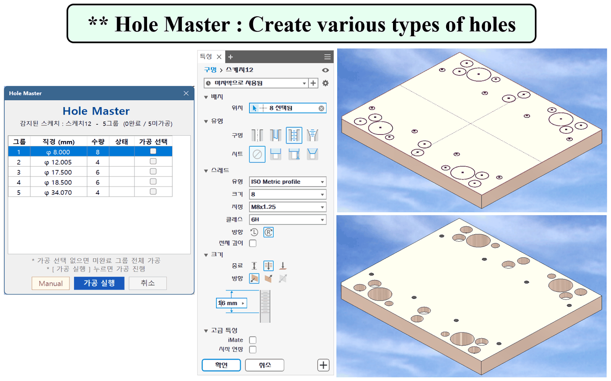
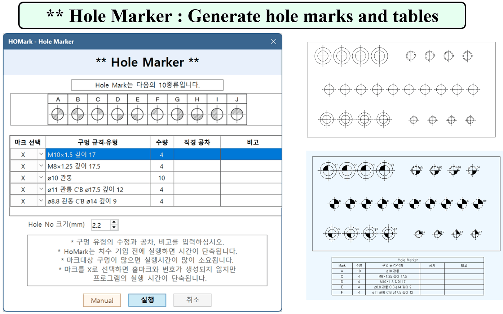
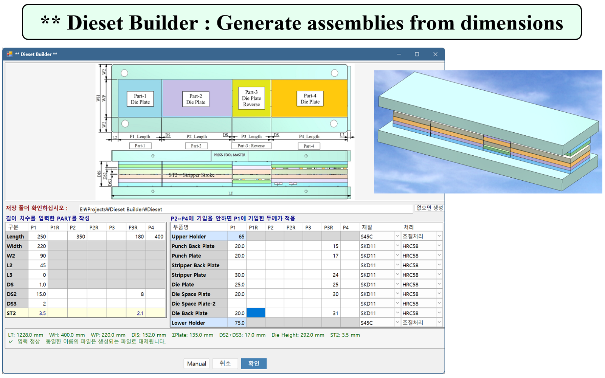
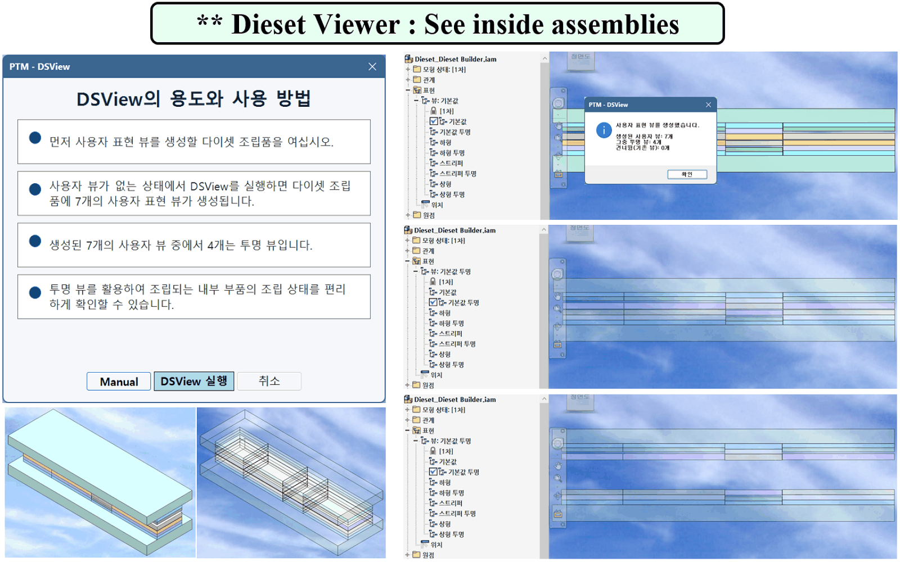
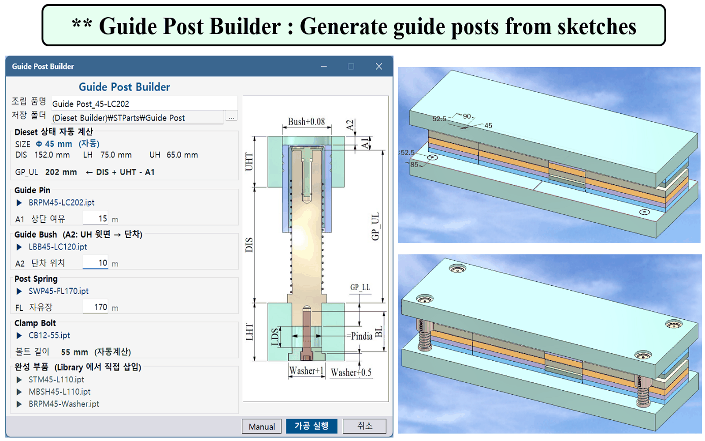
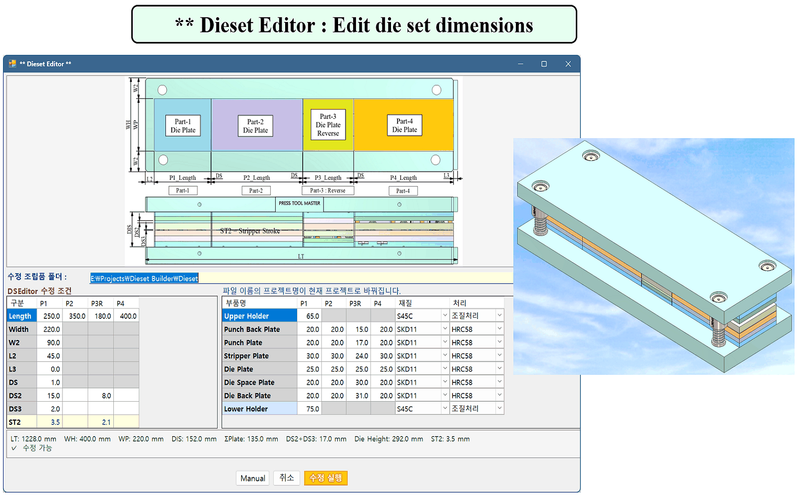

PTM Ribbon Command · Plate Master
PTM 명령을 리본에서 실행하고 플레이트와 블록을 생성합니다.
Run PTM commands and generate plates and blocks.
60년의 프레스 금형 설계 경험과 Autodesk Inventor 자동화 기술을 결합하여, 반복 작업을 줄이고 금형 구조·부품·도면의 표준화를 돕습니다.
Built from 60 years of press die experience, PTM automates repetitive Inventor workflows and helps standardize die structures, components, and drawings.

PTM은 복잡한 이론보다 실제 금형 설계자가 사용하는 순서와 기준을 중심으로 만들어집니다. 2D 설계 경험자가 Autodesk Inventor에서 빠르게 3D 설계로 전환하도록 돕는 것이 목표입니다.
PTM is built around the sequence and logic used by real die designers, helping experienced 2D users transition quickly to 3D design in Autodesk Inventor.
현재 개발된 기능의 실제 Autodesk Inventor 실행 화면입니다. 생성, 편집, 표준 부품 조립, 도면 표기까지 하나의 흐름으로 연결됩니다.
These are actual Autodesk Inventor screens from the current PTM development build, covering creation, editing, standard-part assembly, and drawing annotation.

PTM 명령을 리본에서 실행하고 플레이트와 블록을 생성합니다.
Run PTM commands and generate plates and blocks.

다양한 종류의 홀을 생성합니다.
Create various types of holes.

홀 마크와 홀 테이블을 작성합니다.
Generate hole marks and tables.

구성 치수를 입력하여 조립품을 자동 생성합니다.
Generate assemblies from dimensions.

투명 표현으로 조립품 내부를 쉽게 확인합니다.
See inside assemblies.

스케치를 기준으로 가이드 포스트를 자동 생성합니다.
Generate guide posts from sketches.

다이셋의 구성 치수를 변경합니다.
Edit die set dimensions.
Autodesk Inventor의 조립품, 부품, 도면 환경에 맞추어 개발합니다.
Built specifically for Inventor parts, assemblies, and drawings.
한국과 일본 금형 현장에서 널리 쓰이는 규격을 우선 반영합니다.
Prioritizes standards commonly used by Korean and Japanese die shops.
60년의 설계·제작 경험을 바탕으로 실제 작업 순서에 맞춥니다.
Follows real production sequences built from 60 years of experience.
단품 복사에 그치지 않고 다이셋에 조립된 상태로 적용합니다.
Places standard parts as functional assemblies, not isolated files.
2D 설계 경험자가 자연스럽게 이해할 수 있는 입력 방식과 안내를 지향합니다.
Uses familiar inputs and guidance for experienced 2D designers.
설계 기준과 노하우를 개인 경험이 아니라 회사의 자산으로 축적합니다.
Turns design standards and know-how into a reusable company asset.
PmPlate, PmHole, EGFinish, HOMark, DSBuilder, DSEditor, Guide Post Builder 등의 개발·검증을 완료했습니다.
Completed development and verification of the core plate, die-set, guide-post, and drawing tools.
Inner Guide Post, Stripper Bolt 등 표준 부품 자동화 기능을 순차 완성합니다.
Complete automation for inner guide posts, stripper bolts, and other standard parts.
Dieset Master 중심의 1차 상품화와 Autodesk App Store 출시를 목표로 합니다.
Target first commercial release focused on Dieset Master.
Design Master를 포함하여 전개·스트립 레이아웃·펀치 설계를 확장합니다.
Add unfolding, strip layout, and punch design through Design Master.
Punch Hole Creator와 Drafting Master를 포함한 전체 시스템 완성을 목표로 합니다.
Target completion of the full system with Punch Hole Creator and Drafting Master.
피티엠테크놀로지PTM Technology
경기도 안양시 만안구 안양로 268
가산빌딩 3층 41호
#41, 3F, Gasan Bldg, 268 Anyang-ro,
Manan-gu, Anyang-si, Gyeonggi-do, Korea
Autodesk Developer Network
Member ID: KRKR0025
전자·자동차·의료기기 분야에서 프레스 금형과 정밀기계를 설계·제작해 온 실무 전문가입니다. 그동안 산업 현장에서 축적한 설계 기준과 노하우를 다음 세대에 전달하기 위해 PTM 개발에 전념하고 있습니다.
A veteran press-die and precision-machinery specialist with experience across electronics, automotive, and medical manufacturing. He is now devoted to developing PTM, passing on the design standards and know-how built up over the years in the industry to the next generation.
PTM의 목표는 단순히 작업 시간을 줄이는 것이 아니라, 금형 회사가 설계 기준과 기술 노하우를 지속적으로 축적할 수 있는 디지털 기반을 만드는 것입니다.
PTM aims not only to reduce design time, but to help die companies preserve and build their engineering knowledge as a lasting digital asset.
개발 현황, 도입 검토, 협력 또는 출시 알림과 관련하여 문의해 주세요.
Contact us about development progress, adoption, partnership, or launch updates.
khightec@daum.net